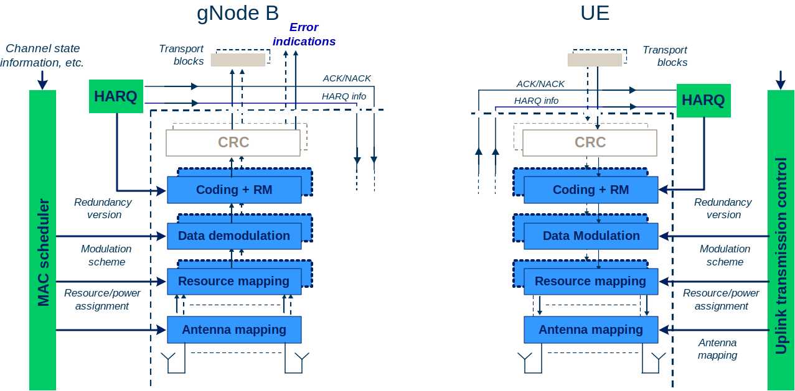
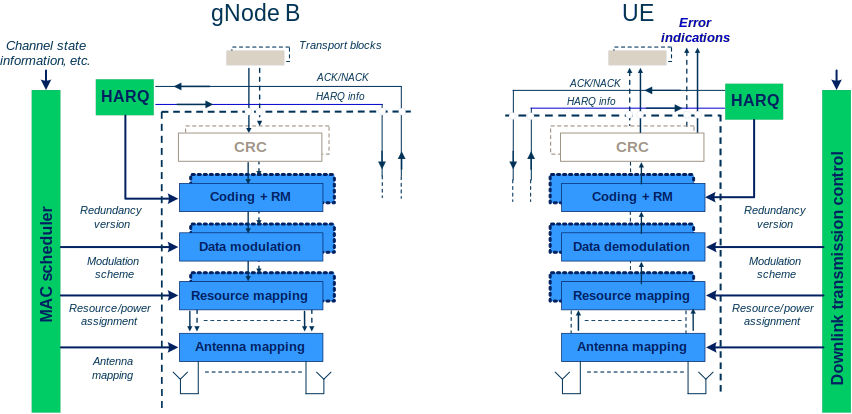
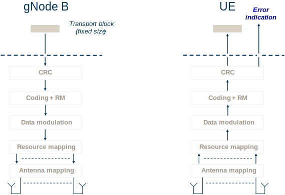
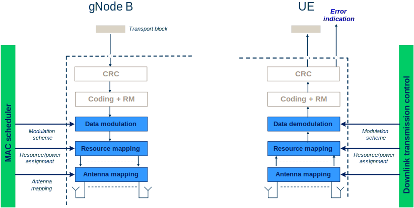
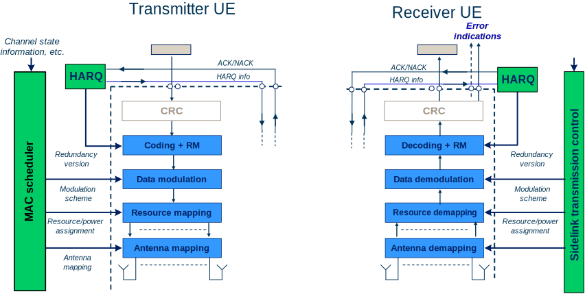
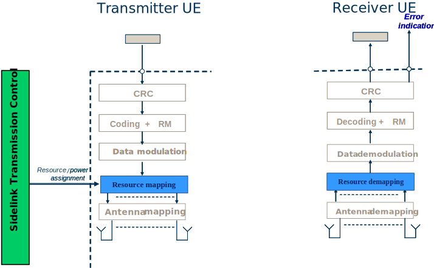

3GPP TS 38.202 V17.5.0 (2023-12)
Technical Specification
3rd Generation Partnership Project;
Technical Specification Group Radio Access Network;
NR;
Services provided by the physical layer
(Release 17)
The present document has been developed within the 3rd Generation
Partnership Project (3GPP TM) and may be further elaborated
for the purposes of 3GPP..
The present document has not been subject to any approval process by the
3GPP Organizational Partners and shall not be implemented.
This Specification is provided for future development work within 3GPP
only. The Organizational Partners accept no liability for any use of
this Specification.
Specifications and Reports for implementation of the 3GPP TM
system should be obtained via the 3GPP Organizational Partners'
Publications Offices.
Keywords
3GPP, New Radio, Layer 1
3GPP
Postal address
3GPP support office address
650 Route des Lucioles - Sophia Antipolis
Valbonne - FRANCE
Tel.: +33 4 92 94 42 00 Fax: +33 4 93 65 47 16
Internet
http://www.3gpp.org
Copyright Notification
No part may be reproduced except as authorized by written
permission.
The copyright and the foregoing restriction extend to reproduction in
all media.
© 2023, 3GPP Organizational Partners (ARIB, ATIS, CCSA, ETSI, TSDSI, TTA, TTC).
All rights reserved.
UMTS™ is a Trade Mark of ETSI registered for the benefit of its members
3GPP™ is a Trade Mark of ETSI registered for the benefit of its
Members and of the 3GPP Organizational Partners
LTE™ is a Trade Mark of ETSI registered for the benefit of its Members
and of the 3GPP Organizational Partners
GSM® and the GSM logo are registered and owned by the GSM Association
Foreword 4
1 Scope 5
2 References 5
3 Definitions, symbols and abbreviations 5
3.1 Definitions 5
3.2 Symbols 5
3.3 Abbreviations 5
4 Services and functions of the physical layer 6
4.1 General 6
4.2 Overview of L1 functions 6
5 Model of physical layer of the UE 6
5.1 Uplink model 7
5.1.1 Uplink shared channel 7
5.1.2 Random access channel 7
5.2 Downlink model 8
5.2.1 Downlink shared channel 8
5.2.2 Broadcast channel 8
5.2.3 Paging channel 9
5.3 Sidelink model 10
5.3.1 Sidelink shared channel 10
5.3.2 Broadcast channel 11
6 Simultaneous transmission and reception of physical channels and physical signals 12
6.1 Uplink 12
6.2 Downlink 13
6.3 Sidelink 15
7 Measurements provided by the physical layer 16
7.1 UE measurements 16
Annex A (informative): Change history 17
This Technical Specification has been produced by the 3rd Generation Partnership Project (3GPP).
The contents of the present document are subject to continuing work within the TSG and may change following formal TSG approval. Should the TSG modify the contents of the present document, it will be re-released by the TSG with an identifying change of release date and an increase in version number as follows:
Version x.y.z
where:
x the first digit:
1 presented to TSG for information;
2 presented to TSG for approval;
3 or greater indicates TSG approved document under change control.
y the second digit is incremented for all changes of substance, i.e. technical enhancements, corrections, updates, etc.
z the third digit is incremented when editorial only changes have been incorporated in the document.
The present document is a technical specification of the services provided by the physical layer of 5G-NR to upper layers.
The following documents contain provisions which, through reference in this text, constitute provisions of the present document.
[1] 3GPP TR 21.905: "Vocabulary for 3GPP Specifications"
[2] 3GPP TS 38.201: "NR; Physical Layer – General Description"
[3] 3GPP TS 38.211: "NR; Physical channels and modulation"
[4] 3GPP TS 38.212: "NR; Multiplexing and channel coding"
[5] 3GPP TS 38.213: "NR; Physical layer procedures for control"
[6] 3GPP TS 38.214: "NR; Physical layer procedures for data"
[7] 3GPP TS 38.215: "NR; Physical layer measurements"
[8] 3GPP TS 38.306: "NR; User Equipment (UE) radio access capabilities"
For the purposes of the present document, the terms and definitions given in TR 21.905 [1] and the following apply. A term defined in the present document takes precedence over the definition of the same term, if any, in TR 21.905 [1].
For the purposes of the present document, the following symbols apply:
For the purposes of the present document, the abbreviations given in TR 21.905 [1] and the following apply. An abbreviation defined in the present document takes precedence over the definition of the same abbreviation, if any, in TR 21.905 [1].
For the purposes of the present document, the following abbreviations apply:
ARQ Automatic Repeat Request
BCH Broadcast Channel
CA Carrier Aggregation
CRC Cyclic Redundancy Check
DC Dual Connectivity
DL Downlink
FEC Forward Error Correction
GF Grant-Free
MAC Medium Access Control
MIMO Multiple Input Multiple Output
PBCH Physical Broadcast Channel
PCH Paging Channel
PDCCH Physical Downlink Control Channel
PDSCH Physical Downlink Shared Channel
PRACH Physical Random Access Channel
PUCCH Physical Uplink Control Channel
PUSCH Physical Uplink Shared Channel
RACH Random Access Channel
RF Radio Frequency
RNTI Radio Network Temporary Identifier
SCH Shared Channel
SI System Information
SPS Semi-Persistent Scheduling
SRS Sounding Reference Signal
TPC Transmit Power Control
UL Uplink
The physical layer offers data transport services to higher layers.
The access to these services is through the use of transport channels via the MAC sub-layer.
A transport block is defined as the data delivered by MAC layer to the physical layer and vice versa.
As mentioned in [2, TS 38.201], the physical layer is expected to perform the following functions to provide the data transport service:
- Error detection on the transport channel and indication to higher layers;
- FEC encoding/decoding of the transport channel;
- Hybrid ARQ soft-combining;
- Rate matching of the coded transport channel to physical channels;
- Mapping of the coded transport channel onto physical channels;
- Power weighting of physical channels;
- Modulation and demodulation of physical channels;
- Frequency and time synchronisation;
- Radio characteristics measurements and indication to higher layers;
- Multiple Input Multiple Output (MIMO) antenna processing;
- RF processing.
L1 functions are modelled for each transport channel in clause 5.
The 5G-NR physical-layer model captures those characteristics of the 5G-NR physical-layer that are relevant from the point-of-view of higher layers. More specifically, the physical-layer model captures:
- The structure of higher-layer data being passed down to or up from the physical layer;
- The means by which higher layers can configure the physical layer;
- The different indications (error indications, channel-quality indications, etc.) that are provided by the physical layer to higher layers.
The physical-layer model for Uplink Shared Channel transmission is described based on the corresponding PUSCH physical-layer-processing chain, see Figure 5.1.1-1. Processing steps that are relevant for the physical-layer model, e.g. in the sense that they are configurable by higher layers, are highlighted in blue.
- Higher-layer data passed to/from the physical layer
- CRC and transport-block-error indication
- FEC and rate matching
- Data modulation
- Mapping to physical resource
- Multi-antenna processing
- Support of L1 control and Hybrid-ARQ-related signalling

Figure 5.1.1-1: Physical-layer model for UL-SCH transmission
The physical-layer model for RACH transmission is characterized by a PRACH preamble format that consists of a cyclic prefix, a preamble, and a guard time during which nothing is transmitted.
The physical-layer model for Downlink Shared Channel transmission is described based on the corresponding PDSCH physical-layer-processing chain, see Figure 5.2.1-1. Processing steps that are relevant for the physical-layer model, e.g. in the sense that they are configurable by higher layers, are highlighted in blue.
- Higher-layer data passed to/from the physical layer;
- CRC and transport-block-error indication;
- FEC and rate matching;
- Data modulation;
- Mapping to physical resource;
- Multi-antenna processing;
- Support of L1 control and Hybrid-ARQ-related signalling.

Figure 5.2.1-1: Physical-layer model for DL-SCH transmission
The physical-layer model for BCH transmission is characterized by a fixed pre-defined transport format. There is one transport block for the BCH every 80ms. The BCH physical-layer model is described based on the corresponding PBCH physical-layer-processing chain, see Figure 5.2.2-1:
- Higher-layer data passed to/from the physical layer;
- CRC and transport-block-error indication;
- FEC and rate matching;
- Data modulation;
- Mapping to physical resource;
- Multi-antenna processing.

Figure 5.2.2-1: Physical-layer model for BCH transmission
The physical-layer model for PCH transmission is described based on the corresponding physical-layer-processing chain, see Figure 5.2.3-1. The PCH is carried on PDSCH. Processing steps that are relevant for the physical-layer model, e.g. in the sense that they are configurable by higher layers, are highlighted in blue.
- Higher-layer data passed to/from the physical layer;
- CRC and transport-block-error indication;
- FEC and rate matching;
- Data modulation;
- Mapping to physical resource;
- Multi-antenna processing.

Figure 5.2.3-1: Physical-layer model for PCH transmission
The physical-layer model for Sidelink Shared Channel transmission is described based on the corresponding SL-SCH physical-layer-processing chain, see Figure 5.3.1-1. Processing steps that are relevant for the physical-layer model, e.g. in the sense that they are configurable by higher layers, are highlighted in blue.
- Higher-layer data passed to/from the physical layer;
- CRC and transport-block-error indication;
- FEC and rate matching;
- Data modulation;
- Mapping to physical resource;
- Multi-antenna processing;
- Support of L1 control and Hybrid-ARQ-related signalling.

Figure 5.3.1-1: Physical-layer model for SL-SCH transmission
The physical-layer model for Sidelink Broadcast Channel transmission is characterized by a fixed pre-defined transport format. There is one transport block for every slot in which the UE transmits SL-BCH, if the UE is configured to transmit on SL-BCH. The SL-BCH physical-layer model is described based on the corresponding SL-BCH physical-layer-processing chain, see Figure 5.3.2-1:
- Higher-layer data passed to/from the physical layer;
- CRC and transport-block-error indication;
- FEC and rate matching;
- Data modulation;
- Mapping to physical resource;
- Multi-antenna processing.

Figure 5.3.2-1: Physical-layer model for SL-BCH transmission
This clause describes the requirements from the UE to send and receive multiple physical channels and physical signals simultaneously depending on the capabilities and service requirements. The following notation is used between both the uplink and downlink clauses below.
- p is the number of uplink carriers configured for the UE on which physical channels can be transmitted
- p' is the number of uplink carriers configured for the UE on which SRS can be transmitted
- q is the number of downlink carriers configured for the UE
- j is the number of cell groups configured for the UE.
- k is the number of PUCCH groups configured for the UE.
The tables 6.1-1 and 6.1-2 describe the possible combinations of physical channels and SRS that can be sent in simultaneously in the uplink by one UE. Table 6.1-1 introduces notation for a "Transmission Type" which represents a physical channel or sounding reference signal, and any associated transport channel. Table 6.1-2 describes the combinations of these "Transmission Types" which are supported by the UE depending on capabilities [8, TS 38.306], and enumerates how many of each can be transmitted simultaneously.
Table 6.1-1: Uplink "Transmission Types"
| "Transmission Type" | Physical Channel or SRS | Associated Transport Channel |
Comment |
|---|---|---|---|
| A | PRACH | RACH | Note 1, Note 3 |
| B | PUCCH | N/A | |
| C | PUSCH | UL-SCH | Note 2, Note 3 |
| D | SRS | N/A | |
Note 1: RACH corresponds to contention based. Note 2: UCI on PUSCH without UL-SCH is possible. Note 3: For SCell, MsgA PRACH and MsgA PUSCH is not supported. |
|||
Table 6.1-2: Uplink "Transmission Type" combinations
| Supported Combinations | Comment |
|---|---|
| j x A | Note 1 |
| k x B | Note 2 |
| p x C | Note 3, Note 4 |
| p' x D | Note 3, Note 5 |
| \(\widetilde{j} \times\) A + \(\widetilde{k} \times\)B | Note 6 |
| \(\widetilde{j} \times\) A + \(\widetilde{p} \times\)C | Note 6 |
| \(\widetilde{j} \times\) A + \(\widetilde{p}' \times\)D | Note 6 |
| \(\widehat{k} \times\) B + \(\widehat{p} \times\)C | Note 8 |
| B + \(\widehat{p}' \times\)C | Note 9 |
| \(\widetilde{k} \times\) B + \(\widetilde{p}' \times\)D | Note 7 |
| \(\widetilde{p} \times\) C + \(\widetilde{p}' \times\)D | Note 7 |
Note 1: The number of cell groups j in the supported combination is subject to UE capability. Note 2: The number of PUCCH groups k in the supported combination is subject to UE capability. Note 3: The number of carriers p, and p' in the supported combinations are subject to UE capability. Note 4: In the case there is one SUL carrier, then p-1 would be supported. Note 5: UE may be configured with p' but may also have capability to simultaneously sound less than this number. Note 6: Simultaneous PRACH with PUCCH (or PUSCH or SRS) is supported only in the case of inter-band CA, with \(\widetilde{j} \leq j\), \(\widetilde{k} \leq k\), \(\widetilde{p} \leq p\), and \(\widetilde{p}' \leq p\)' depending on the configuration, and subject to UE capability for parallel transmission. Note 7: Simultaneous SRS with PUCCH (or PUSCH) is supported only in the case of inter-band CA, with \(\widetilde{k} \leq k\), \(\widetilde{p} \leq p\), and \(\widetilde{p}' \leq p\)' depending on the configuration, and subject to UE capability for parallel transmission. Note 8: Simultaneous PUCCH and PUSCH(s) for the case that multiple PUCCH groups are configured and the respective PUCCH and PUSCH(s) are transmitted in the different PUCCH groups, with \(\widehat{k} < k\) and \(\widehat{p} \leq p\). \(k\) and \(p\) are subject to UE capability for supported number of PUCCH groups and UL carriers, respectively. \(\widehat{k}\) and \(\widehat{p}\) depend on configuration. Note 9: Simultaneous PUCCH and PUSCH(s) within the same PUCCH group in the case of inter-band CA, \({\widehat{p}}'\ \)depending on the configuration, and subject to UE capability for parallel transmission of PUCCH and PUSCH within the same PUCCH group. |
|
The tables 6.2-1, 6.2-2 describe the possible combinations of physical channels that can be received simultaneously in the downlink by one UE. Table 6.2-1 introduces notation for a "Reception Type" which represents a physical channel and any associated transport channel. Table 6.2-2 describes the combinations of these "Reception Types" which are supported by the UE depending on capabilities [8, TS 38.306], and enumerates how many of each can be received simultaneously. The UE shall be able to receive all TBs according to the indication on PDCCH. Any subset of the combinations specified in table 6.2-2 is also supported.
Table 6.2-1: Downlink "Reception Types"
| "Reception Type" | Physical Channel(s) | Monitored RNTI |
Associated Transport Channel |
Comment |
|---|---|---|---|---|
| A | PBCH | N/A | BCH | |
| B | PDCCH+PDSCH | SI-RNTI | DL-SCH | Note 1 |
| C0 | PDCCH | P-RNTI | N/A | Note 1, Note 2 |
| C1 | PDCCH+PDSCH | P-RNTI | PCH | Note 1 |
| D0 | PDCCH+PDSCH | RA-RNTI or Temporary C-RNTI or MsgB-RNTI | DL-SCH | Note 3 |
| D1 | PDCCH+PDSCH | C-RNTI, CS-RNTI, MCS-C-RNTI | DL-SCH | |
| D2 | PDCCH | C-RNTI, CS-RNTI, MCS-C-RNTI | DL-SCH | |
| D3 | PDCCH+PDSCH | G-RNTI, G-CS-RNTI | DL-SCH | Note 6 |
| D4 | PDCCH | G-CS-RNTI | N/A | Note 7 |
| D5 | PDCCH+PDSCH | MCCH-RNTI | DL-SCH | Note 8 |
| D6 | PDCCH+PDSCH | G-RNTI | DL-SCH | Note 9 |
| D7 | PDCCH+PDSCH | C-RNTI | DL-SCH | Note 10 |
| E | PDCCH | C-RNTI | N/A | Note 4 |
| F0 | PDCCH | Temporary C-RNTI | UL-SCH | Note 3 |
| F1 | PDCCH | C-RNTI, CS-RNTI, MCS-C-RNTI | UL-SCH | |
| F2 | PDCCH | C-RNTI, CS-RNTI | UL-SCH | Note 10 |
| G | PDCCH | SFI-RNTI | N/A | |
| H | PDCCH | INT-RNTI | N/A | |
| J0 | PDCCH | TPC-PUSCH-RNTI | N/A | |
| J1 | PDCCH | TPC-PUCCH-RNTI | N/A | |
| J2 | PDCCH | TPC-SRS-RNTI | N/A | |
| K | PDCCH | SP-CSI-RNTI | N/A | |
| L0 | PDCCH | SL-RNTI | SL-SCH | |
| L1 | PDCCH | SL-CS-RNTI | SL-SCH | |
| M | PDCCH | SL Semi-Persistent Scheduling V-RNTI | SL-SCH | Note 5 |
| N | PDCCH | PS-RNTI | N/A | |
| O | PDCCH | AI-RNTI | N/A | |
| P | PDCCH | CI-RNTI | N/A | |
| Q | PDCCH | PEI-RNTI | N/A | Note 1 |
Note 1: These are received from PCell only. Note 2: In some cases UE is only required to monitor the short message within the DCI for P-RNTI. Note 3: These are received from PCell or PSCell. Note 4: This corresponds to PDCCH-ordered PRACH. Note 5: This corresponds to PDCCH scheduling LTE PC5. Note 6: This is for multicast in RRC connected state. Note 7: This corresponds to DL Semi-Persistent Scheduling release for multicast in RRC connected state. Note 8: This is for broadcast MCCH. Note 9: This is for broadcast MTCH. UE is not required to decode more than one PDSCH for MTCH simultaneously. Note 10: This is for small data transmission in RRC inactive state. |
||||
Table 6.2-2: Downlink "Reception Type" combinations
| Supported Combinations | Comment | |||||
|---|---|---|---|---|---|---|
| PCell | PSCell | SCell | ||||
| 1. RRC_IDLE | ||||||
| 1.1 All UEs | ||||||
| A + (B and/or (C1 or Q) and/or D0) + F0 | Note 1 | |||||
| 1.2 UEs supporting MBS broadcast reception | ||||||
| A+D5 | ||||||
| 2. RRC_INACTIVE | ||||||
| 2.1 All UEs | ||||||
| A + (B and/or (C0 or C1 or Q) and/or (D0 or D7)) + (F0 or F2) | Note 1 | |||||
| 2.2 UEs supporting MBS broadcast reception | ||||||
| A+D5 | ||||||
| 3. RRC_CONNECTED | ||||||
| (A + ((C0 + (B and/or (D0 or (m1*D1+m2*D2+((m3*D3+m4*D4) or m5*(D5 or D6))))) + E + F0 + n*F1 + G + H + J0 + J1 + J2 + K + O + L0 + L1 + M + N + P) or D5)) | (A + (D0 or (m1*D1+m2*D2)) + E + F0 + n*F1 + G + H + J0 + J1 + J2 + K + O + N + P) | m1*D1 + m2*D2 + ((m3*D3+m4*D4) or m5*(D5 or D6)) + E + n*F1 + G + H + J0 + J1 + J2 + K + O + L0 + L1 + M + P |
Note 2, Note 3, Note 4, Note 5, Note 6, Note 7, Note 8, Note 9, Note 10, Note 11, Note 12, Note13, Note 14 | |||
Note 1: UE is not required to decode more than two PDSCH simultaneously, and decoding prioritization when more than two are received is up to UE implementation. Note 2: For PCell, UE is not required to decode SI-RNTI PDSCH simultaneously with C-RNTI PDSCH, unless in FR1. Note 3: Supported combinations are subject to UE capabilities for dual connectivity, carrier aggregation, receiving of group TPC commands, pre-emption indication and dynamic SFI monitoring. Note 4: The values of m2 ≥ 0 and n≥ 0 in the supported combinations are subject to the UE capability. Note 5: Support of monitoring PDCCH with SL-RNTI, SL-CS-RNTI, SL Semi-Persistent Scheduling V-RNTI are subject to UE capability. Note 6: The values of m1 ≥ 1 in the supported combinations are subject to the UE capability. Note 7: In Active time, a UE is not expected to monitor the DCI format for the PDCCH scrambled by PS-RNTI. Note 8: The PDCCH scrambled by PS-RNTI can only be configured on the PCell and PSCell. Note 9: For a UE supporting MBS multicast reception, the values of 1 ≥ m3 ≥ 0 and m4 ≥ 0 are subject to UE capability and applicable to RRC connected UEs. If m3 = 1, then m1 ≤ 1. Note 10: For a UE supporting MBS multicast or broadcast reception, the UE is not expected to be configured simultaneously with more than one component carrier for multicast or broadcast reception. Note 11: For a UE supporting MBS broadcast reception, the values of 1≥m5 ≥ 0 are subject to UE capability and applicable to RRC connected UEs. If m5=1, then m1≤1. Note 12: For a UE supporting MBS broadcast reception in RRC_CONNECTED state, it is required to support reception of FDMed MCCH PDSCH and PBCH in Pcell. Note 13: For a UE supporting MBS multicast or broadcast reception in RRC_CONNECTED state, it is not required to support reception of FDMed MCCH PDSCH/broadcast MTCH PDSCH/multicast MTCH PDSCH and SIB PDSCH in PCell. Note 14: For a UE supporting MBS multicast or broadcast reception in RRC_CONNECTED state, it is not required to support reception of FDMed broadcast MTCH PDSCH/multicast MTCH PDSCH and PBCH in PCell. |
||||||
The tables 6.3-1 and 6.3-2 describe the possible combinations of physical channels that can be sent simultaneously in the sidelink by a UE. Table 6.3-1 introduces notation for a sidelink "Transmission Type" which represents a physical channel, and any associated transport channel. Table 6.3-2 describes the combinations of these "Transmission Types" which are supported by the UE depending on capabilities [8, TS 38.306], and enumerates how many of each can be transmitted simultaneously.
Table 6.3-1: Sidelink "Transmission Types"
| "Transmission Type" | Physical Channel | Associated Transport Channel |
Comment |
|---|---|---|---|
| A | PSBCH | SL-BCH | |
| B | PSSCH | SL-SCH | |
| C | PSCCH | SL-SCH | |
| D | PSFCH | N/A |
Table 6.3-2: Sidelink "Transmission Type" combinations
| Supported Combinations | Comment |
|---|---|
| A | |
| B | |
| C | |
| \(N \times\) D | |
| B+C | |
| Note: Depending on the UE capability, the UE may be able to perform simultaneous Uplink and Sidelink transmissions. If the simultaneous transmission of Sidelink and Uplink is beyond the UE capability, the one not prioritized can be dropped according to [TS 38.321]. | |
The tables 6.3-3 and 6.3-4 describe the possible combinations of physical channels that can be received simultaneously in the sidelink by a UE. Table 6.3-3 introduces notation for a sidelink "Reception Type" which represents a physical channel, and any associated transport channel. Table 6.3-4 describes the combinations of these "Reception Types" which are supported by the UE depending on capabilities [8, TS 38.306], and enumerates how many of each can be received simultaneously.
Table 6.3-3: Sidelink "Reception Types"
| "Reception Type" | Physical Channel | Associated Transport Channel |
Comment |
|---|---|---|---|
| A | PSBCH | SL-BCH | |
| B | PSSCH | SL-SCH | |
| C | PSCCH | SL-SCH | |
| D | PSFCH | N/A |
Table 6.3-4: Sidelink "Reception Type" combinations
| Supported Combinations | Comment |
|---|---|
| A | |
| B | Note 1 |
| C | Note 1 |
| \(M \times\) D | |
| B+C | Note 1 |
| Note 1: Corresponds to simultaneous reception within one sub-channel | |
The list and detailed definition of UE measurements is provided in [7, TS 38.215].
Annex A (informative):
Change history
| Change history | |||||||
| Date | Meeting | TDoc | CR | Rev | Cat | Subject/Comment | New version |
| 2017-05 | RAN1#89 | R1-1712013 | Draft skeleton | 0.0.0 | |||
| 2017-07 | AH_1706 | R1-1712013 | Update for agreements from meetings up to RAN1 NR AH2 | 0.0.1 | |||
| 2017-08 | RAN1#90 | R1-1713371 | Update for agreements from meetings up to RAN1 NR AH2 | 0.0.2 | |||
| 2017-08 | RAN1#90 | R1-1714655 | Update with change marks removed for RAN1 #90 endorsement | 0.1.0 | |||
| 2017-09 | RAN1#90 | R1-1715320 | Updated with minor editorial changes for review after RAN1 #90 | 0.1.1 | |||
| 2017-09 | RAN#77 | RP-172006 | For information to plenary | 1.0.0 | |||
| 2017-10 | RAN1#90b | R1-1719229 | Updated for agreements from meetings up to RAN1 #90b | 1.0.1 | |||
| 2017-11 | RAN1#91 | R1-1721047 | Updated after email discussion | 1.1.0 | |||
| 2017-12 | RAN1#91 | R1-1721340 | Updated to reflect agreements from RAN1 #91 | 1.2.0 | |||
| 2017-12 | RAN#78 | RP-172630 | Endorsed version for approval by plenary | 2.0.0 | |||
| 2017-12 | RAN#78 | Approved by plenary – Rel-15 spec under change control | 15.0.0 | ||||
| 2018-03 | RAN#79 | RP-180200 | 0001 | - | F | CR capturing the Jan18 ad-hoc and RAN1#92 meeting agreements | 15.1.0 |
| 2018-06 | RAN#80 | RP-181172 | 0002 | 1 | F | CR to 38.202 capturing the RAN1#92bis and RAN1#93 meeting agreements | 15.2.0 |
| 2018-06 | RAN#80 | RP-181257 | 0003 | - | B | CR to 38.202 capturing the RAN1#92bis and RAN1#93 meeting agreements related to URLLC | 15.2.0 |
| 2018-09 | RAN#81 | RP-181789 | 0004 | - | B | CR to 38.202 capturing RAN1#94 meeting agreements | 15.3.0 |
| 2018-12 | RAN#82 | RP-182523 | 0005 | - | F | CR to 38.202 capturing RAN1#95 meeting agreements | 15.4.0 |
| 2019-06 | RAN#84 | RP-191277 | 0006 | - | F | Correction to simultaneous reception of DL Channels | 15.5.0 |
| 2019-06 | RAN#84 | RP-191277 | 0007 | - | F | CR on inclusion of TC-RNTI for monitored RNTI for UL-SCH and inclusion of monitoring PDCCH ordering PRACH on SCell | 15.5.0 |
| 2019-12 | RAN#86 | RP-192623 | 0008 | 1 | F | CR on simultaneous transmission of UL channels | 15.6.0 |
| 2019-12 | RAN#86 | RP-192635 | 0009 | - | B | Introduction of two-step RACH | 16.0.0 |
| 2019-12 | RAN#86 | RP-192637 | 0010 | - | B | Introduction of integrated access and backhaul for NR | 16.0.0 |
| 2019-12 | RAN#86 | RP-192638 | 0011 | - | B | Introduction of V2X | 16.0.0 |
| 2019-12 | RAN#86 | RP-192639 | 0012 | - | B | Introduction of Physical Layer Enhancements for URLLC | 16.0.0 |
| 2019-12 | RAN#86 | RP-192641 | 0013 | - | B | Introduction of MIMO enhancements | 16.0.0 |
| 2019-12 | RAN#86 | RP-192642 | 0014 | - | B | Introduction of UE Power Savings | 16.0.0 |
| 2020-06 | RAN#88-e | RP-200692 | 0015 | - | F | Corrections to MIMO enhancements | 16.1.0 |
| 2020-09 | RAN#89-e | RP-201810 | 0017 | - | F | DL Channel Combination associated with DCI format 2_6 monitoring | 16.2.0 |
| 2020-09 | RAN#89-e | RP-201807 | 0018 | - | F | Corrections on 5G V2X sidelink features | 16.2.0 |
| 2021-12 | RAN#94-e | RP-212960 | 0019 | - | F | Alignment CR for TS 38.202 | 16.3.0 |
| 2021-12 | RAN#94-e | RP-212968 | 0020 | - | B | Introduction of IIoT/URLLC enhancements in NR | 17.0.0 |
| 2021-12 | RAN#94-e | RP-212979 | 0021 | - | B | Introduction of multicast and broadcast services | 17.0.0 |
| 2022-03 | RAN#95-e | RP-220263 | 0022 | - | F | Corrections to NR support of multicast and broadcast services | 17.1.0 |
| 2022-03 | RAN#95-e | RP-220256 | 0023 | - | F | Corrections on NR UE Power Saving Enhancements | 17.1.0 |
| 2022-06 | RAN#96 | RP-221612 | 0024 | - | F | Corrections to NR support of multicast and broadcast services | 17.2.0 |
| 2022-12 | RAN#98-e | RP-222864 | 0025 | - | F | CR on the MBS reception type combinations to TS 38.202 | 17.3.0 |
| 2023-09 | RAN#101 | RP-232450 | 0026 | - | F | Correction on simultaneous reception of SDT and other channels in TS 38.202 | 17.4.0 |
| 2023-12 | RAN#102 | RP-233723 | 0030 | 1 | A | Correction on NR Sidelink | 17.5.0 |